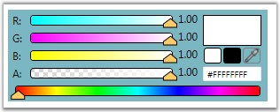

Using the IsScRGBColor property, user can set the value indicating whether this instance is ScRGB color. To enable this property use the following code.
|
[XAML]
<!-- Adding ColorEdit --> <syncfusion:ColorEdit IsScRGBColor="True" Margin="20" Name="colorEdit"/> |
|
[C#]
//Creating an instance of color edit ColorEdit colorEdit = new ColorEdit();
//Setting ScRGBColor colorEdit.IsScRGBColor = true;
//Adding control to the window this.Content = colorEdit; |

Figure 156: IsScRGBColor = "True"